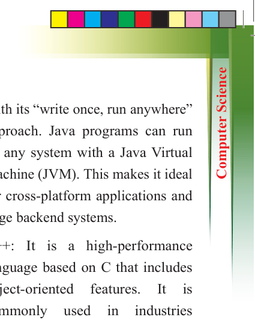
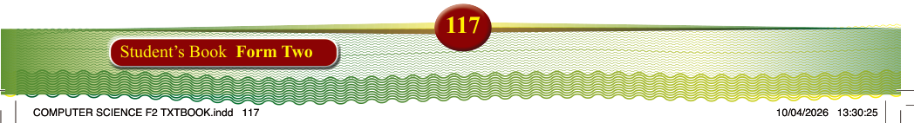
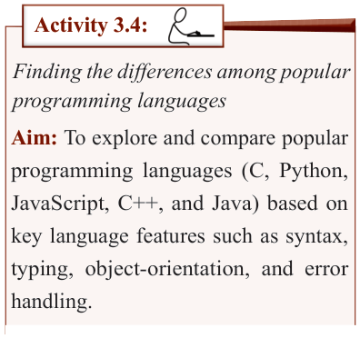

to write any code. Scratch is widely
used in schools to introduce young
students to programming.
2. Python: It is a flexible, high-level
programming language known for
being easy to read and write. It is used
across many fields, such as artificial intelligence (AI), data science, web development, and automation. With
its large collection of libraries and
frameworks,
Python
simplifies
tasks like web scraping, machine
learning, and data analysis. Due to
its simple syntax and broad usage, it is a favourite among both beginners and experts.
3. JavaScript:
It
is
a
dynamic
programming
language
mainly
used to create interactive websites.
It lets developers add features like
animations, forms, and live updates to web pages. Alongside HTML and
CSS, JavaScript is a core technology of the web. It is used for both front-
end (client-side) and back-end
(server-side) development, especially
with frameworks like Node.js.
4. Java: This is a robust, object-oriented
programming language used in many
applications,
particularly
mobile development (Android apps)
and large-scale enterprise systems.
With its “write once, run anywhere”
approach. Java programs can run on any system with a Java Virtual
Machine (JVM). This makes it ideal
for cross-platform applications and
large backend systems.
5. C++: It is a high-performance
language based on C that includes object-oriented
features.
It
is
commonly
used
in
industries
requiring fast and efficient software,
such as video games, system software,
and embedded systems. C++ is also crucial in fields like robotics and high-performance computing
because it provides fine control over
system resources, making it perfect
for tasks where speed and memory
management are critical.

Activity 3.4:
Finding the differences among popular programming languages
Aim: To explore and compare popular
programming languages (C, Python,
JavaScript, C++, and Java) based on
key language features such as syntax,
typing, object-orientation, and error
handling.